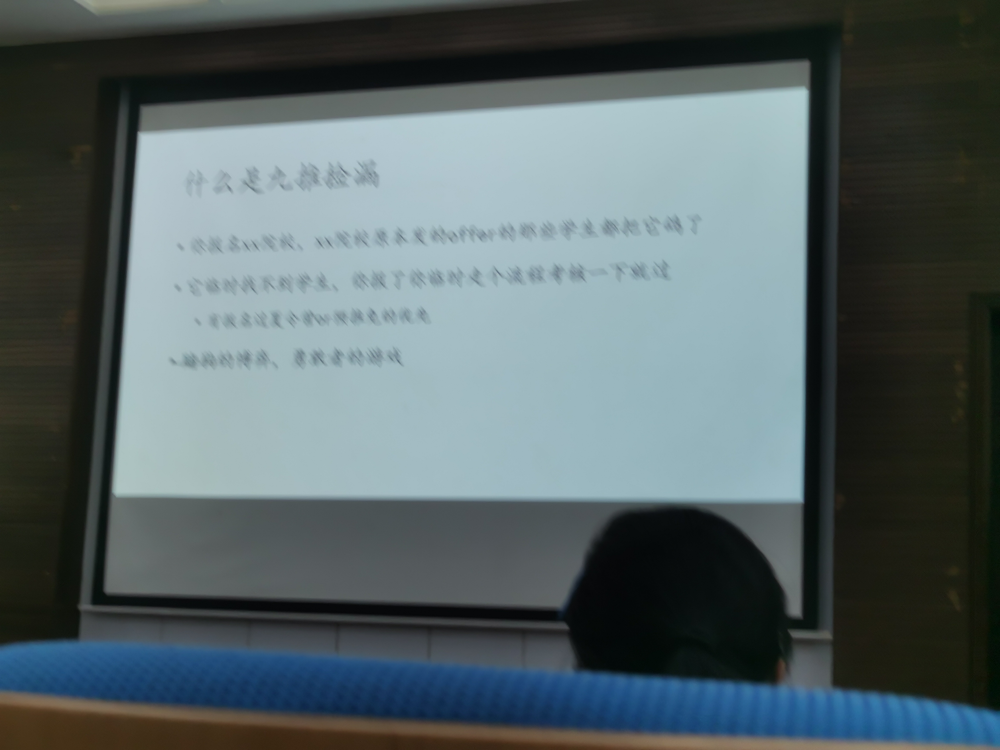
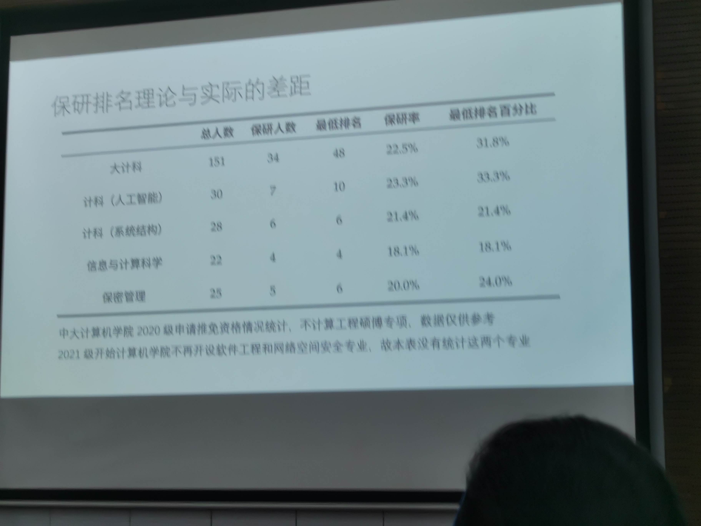
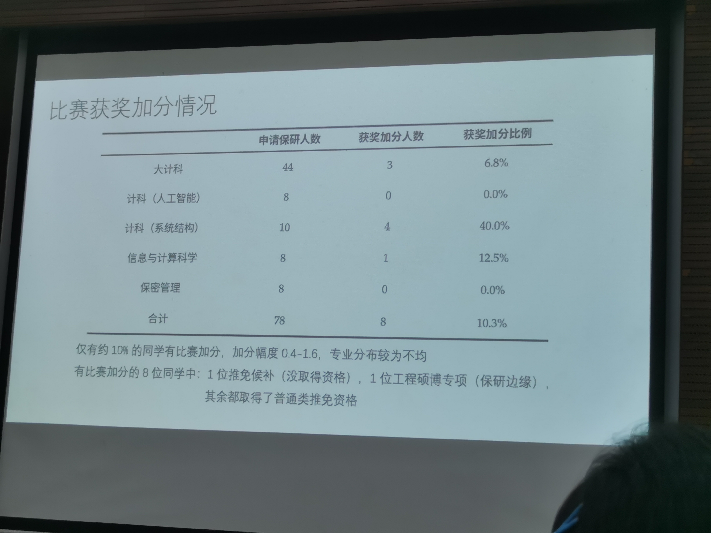

sysu-lecture-240514
保研分享会笔记
2024-0514
整理: CJL
1
九推捡漏：报名过夏令营更好
https://github.com/Alpha-Yang/CS-BAOYAN-2022

机考：
笔试面试
直博：5年，重点考察科研能力
硕士：3年，要求低一些
选导师：问问别人，不劝退就好
大三的寒假就可以开始准备

大部分有加分的同学，绩点都不错

人多的专业，1分可能就有4-5人的差距
2
更好的学校，可能对四六级有更高的要求
一个保研同学
绩点（人工智能方向，大三学分多，所以幸运在大三翻盘）
文书要提前准备
复旦算早的
本来只能申请专硕，后来人少了，可以申请学硕
身边同学只要报了本院夏令营，基本都能入营，有些没有保研的同学，也能参加本院夏令营
5-6月联系导师，晚了名额都没了
老师说至少做出7道，但是他做出5道也没关系
有同学保外校，大四就去学校附近租房进实验室
3
本院绩点是最重要的，外校可能也是
下面的图可能是说本院
资料要尽早准备
大三下的课是很多的，在寒假就要准备
套磁越早越好，大三寒假，有些人可能很早就在联系（大一大二寒暑假就去了），但什么时候都不晚
发邮件，和导师线下面谈（本校）
入营筛选没有公开的标准，所以有些学校，老师的同意很重要，套磁就很重要
参考网上经验贴，或者问
有些学校有线上笔试：选择题，各种数学
中大：英语文章翻译，一般不是全英面试
PPT放出来的东西必须是自己相当了解，否则不要放
老师问问题，一般是在PPT中选择话题，要让老师有问题问，让老师有办法更好地了解
PPT也是可以早点准备的
大多数学校，优秀营员就是offer，但是存在例外
保外是一个很复杂的问题，每个学校有很多个计算机相关的学院，一般计院的门槛最高，要选一个心仪的导师，很多问题要自己多去了解
专硕和学硕在学院的培养方案有区别，导师看来不一定
直博最重要的是联系导师，必须取得目标导师的同意，和学院的考核关系不大
Q&A
推荐导师？外校导师？
不同的目标，对应的导师选择是不同的
还要结合自己的经历
不是风评很差的都可以
实验室的工位数量和资源，是否和实验室好坏有关
无关，有的实验室可能工位紧张，比如说中大的超算中心
人工智能方向的，显卡或许能表现实验室的水平
有的人不看重资源，只看重学历，去了清北的差
清北一般中大至少前五才去
C9？
浙大是导师团队直接面试，要求排名必须考前，否则除非掌握对团队很重要的科研能力，一般没有机会
保外校，如果排名靠后不要去浪费时间
老师说：比中大计算机好的学校不多？
中大保研相关
中大机试不计入成绩
本科做过科研，但是研究生想换方向，旧的科研经历还有用吗
中大：
面试的过程中，只要有科研经历，都是可以的
建议选自己感兴趣的方向
四六级
四级和六级的要求有一个满足就行
保研和出国
在确定9.28确定保研之后，就不能选择出国了，这是一个诚信问题
保研资格是不可以放弃的
专硕是培养工程性人才，要求更低，培养方案和学硕不同，尽管老师指导是没有区别的
学硕和专硕都可以申请直博
保外校问题
80个推免只有十几个去了外校
外校5%，华五、清北
中大博导
对就业有优势，跟各种企业、国家级实验室
博士阶段月薪1w左右，还要年终奖
直博生很受欢迎
直博一定要考虑研究兴趣
直博第一年可以转硕，但是会浪费导师的招生名额，诚信上不好
直博是9月学院统一组织考核，夏令营也要参加，暑假的时候和导师沟通科研
研究生奖助金第一年基本参考推免和考研成绩
夏令营> 九推>考研
夏令营/期末考
如果夏令营和期末考冲突了，不建议申请缓考
如果期末的成绩没有出来，会导致不能推免
夏令营绩点要求
中大看报名情况
对绩点没有明确书面的要求
顺序：夏令营拿优营->推免
硕博连读和直博
研究生第二年可以申请硕博连读，更难，因为很多老师都招满了
想要直博的保研的时候就报
没有明确的方向就先硕士
中大的硕博专项
教育部要求学校和企业联合培养，比如说中大和华为，双导师
第一年第二年在学校学习，培养方案一样
第三年去企业实习
今年起学硕和专硕培养方案不同